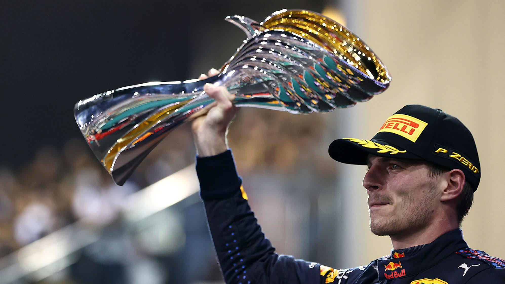

Max Verstapen wins WDC

Max Verstappen secured his maiden World Championship with victory in the season-ending Abu Dhabi Grand Prix, Lewis Hamilton finishing second as the race ended in a nail-biting one-lap sprint after a late Safety Car. The result, which saw Valtteri Bottas finish sixth and Sergio Perez retire, means Mercedes have clinched a record eighth consecutive constructors' championship.
Medium-tyred Hamilton jumped soft-shod Verstappen at the start, while the Dutchman came back in Turn 6, nudging him wide and over the run-off, but the Mercedes driver continued in the lead. Stewards decided not to investigate. Verstappen came in pits on Lap 13, Hamilton a lap later, leaving Sergio Perez in the lead with the mission to hold off Hamilton.
Perez did exactly that, on Laps 20 to 21 being dubbed a “legend” by his team mate as he let him past to continue the chase, before pitting on Lap 22. The podium looked certain until he retired on Lap 56 under a Safety Car, which was brought out for a Nicholas Latifi crash.
That Safety Car, during which Verstappen pitted for soft tyres, left the race with just one lap of green flag racing remaining, producing another memorable moment in this epic season. Verstappen did make the pass on Hamilton into Lap 5, the decisive move, and while Hamilton attempted to come back towards Turn 9, there was nothing doing. History was made, as it was always going to be, and the trophy went to the Dutchman for the first time.
2021 Abu-dhabi race highlights
Drivers comments on the race
Fernando Alonso
Fernando Alonso admitted to feeling confused about the situation regarding lapped cars clearing the leaders ahead of the final lap, but could understand the desire to avoid finishing the race behind the Safety Car. "When the Safety Car was out, I thought that we were able to overtake quickly, because normally it is what happens. You see the green light of the Safety Car immediately, and then you are unlapping yourself until they remove the car. But we had that lap, that green signal, and then two laps after, the engineer told me, 'You will not be able to unlap yourself, the positions will stay like this. One corner later, the green light came on. I said, 'But we have the green light'. And they said, 'You can do it now, you can follow Lando Norris.' And I followed Norris, so yeah, a little bit confusing!"
Lando Norris
Norris agreed with Alonso's comments regarding both the Safety Car and the 2021 title fight in general. "I don't know exactly what happened at the end. They said they weren't going to let us past, and then they let us past just before the restart, so... There's going to be conspiracy theories from everyone, left right and centre. But it was a good race."
Pierre Gasly
Pierre Gasly heaped praise on former teammate Verstappen and outgoing engine supplier Honda for coming out on top in a battle he described as more exciting than a movie script. "I'm really happy for Honda and for Max and Red Bull. I've just seen the replay... Even in a movie I think you could not make it that exciting! Knowing Max, we knew it was going to happen at some point. We've raced together in karting, with Charles Leclerc, battling with these guys, and we knew it was going to happen. But I think what a year it's been, and what a way to achieve it."